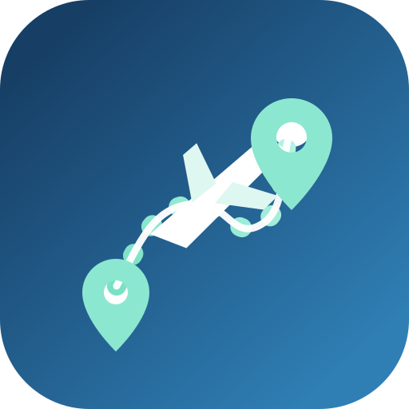

TravelPilot
旅程管家
⌂ 首頁
▣ 行程
● 景點
◉ Live Cam
▤ 旅遊資料
Travel
Pilot
旅程管家
所有旅程，一個地方管理
行程・景點・天氣・自駕・Live Cam・旅遊資料
🗓️
行程
計劃・管理
📍
景點
必去・地圖
🌤️
天氣
預報・提醒
🚙
自駕
租車・路線
📷
Live Cam
即時影像
🧳
旅遊資料
攻略・貼士
🚁
航拍資訊
法規・熱點
⚙️
設定
個人偏好
✈️ 我的旅程
載入中…
正在載入旅程資料…
🔗 快速連結
即時天氣
道路狀況
Live Cam
租車資訊
景點地圖
航拍熱點
📰 最新資訊
日本中部・北陸 冬季旅程
集中管理行程與即時資訊
景點與每日安排
由行程頁快速查看
交通與旅遊資料
航班・自駕・住宿資料
🏠
首頁
🗓️
行程
🗺️
景點
📷
Live Cam
•••
更多